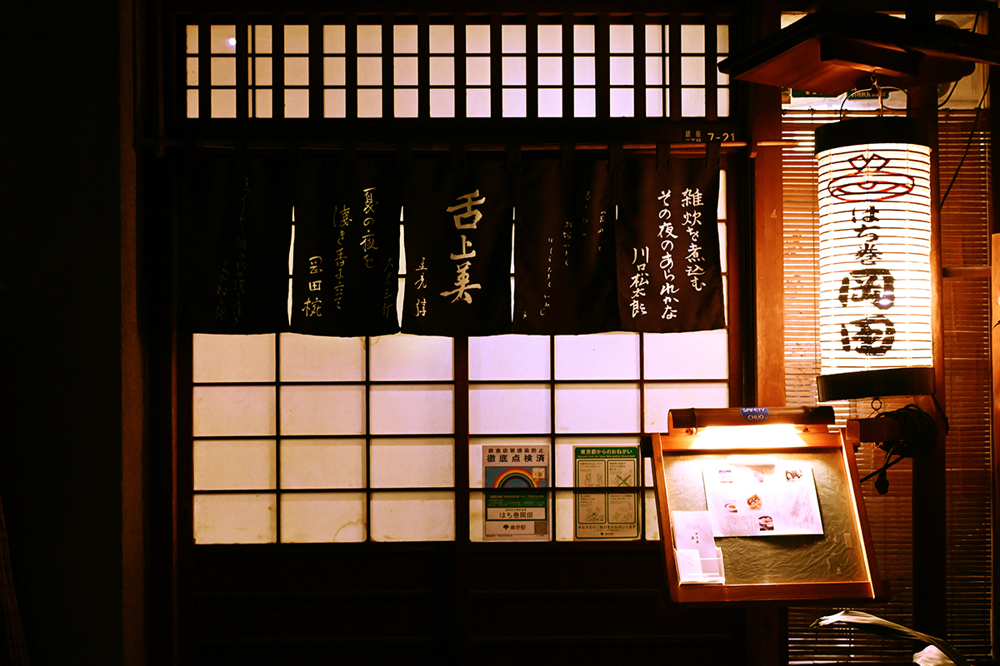
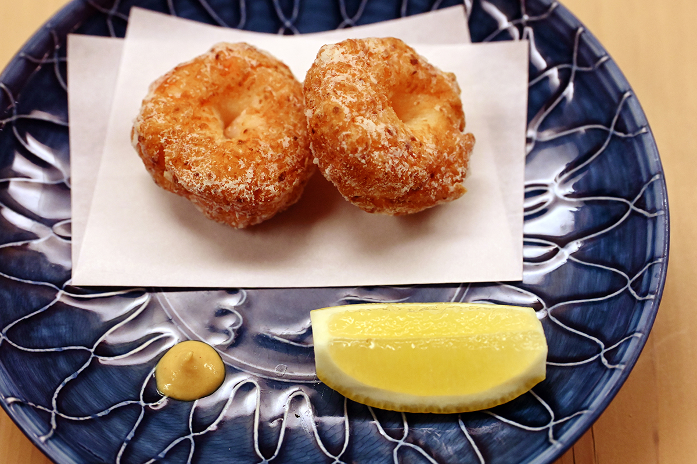
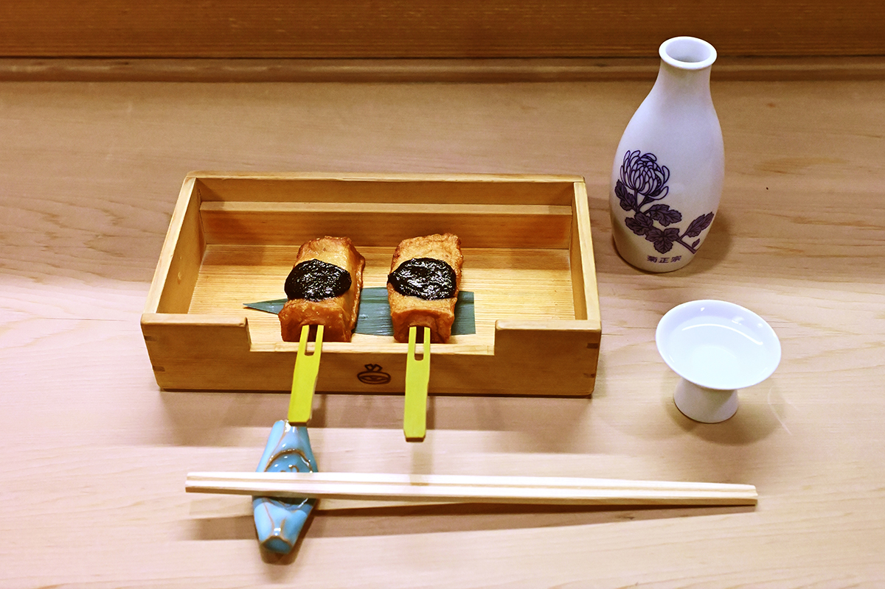
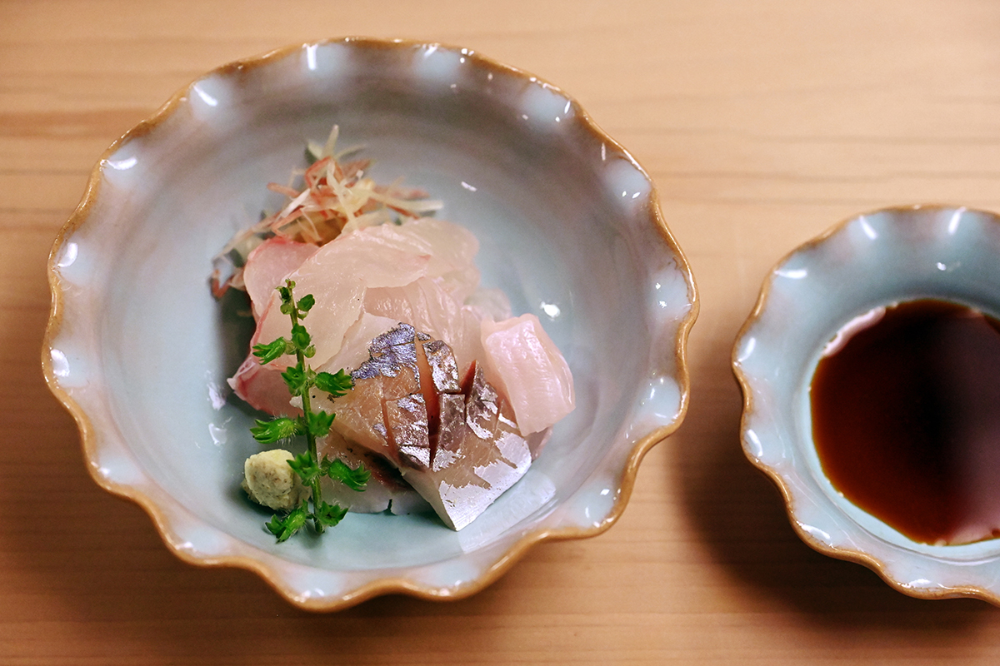
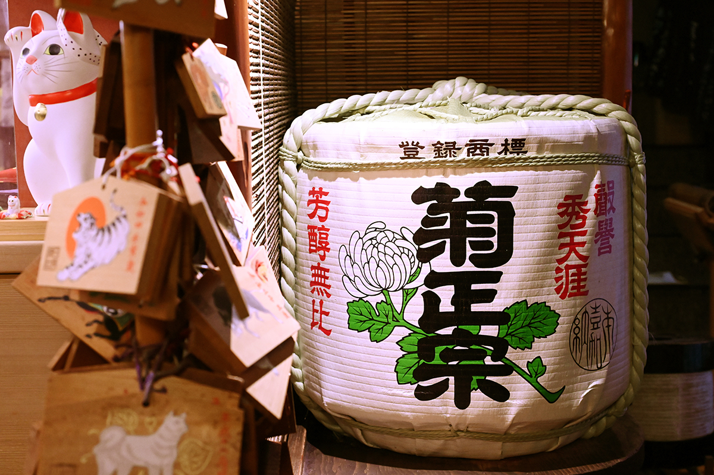
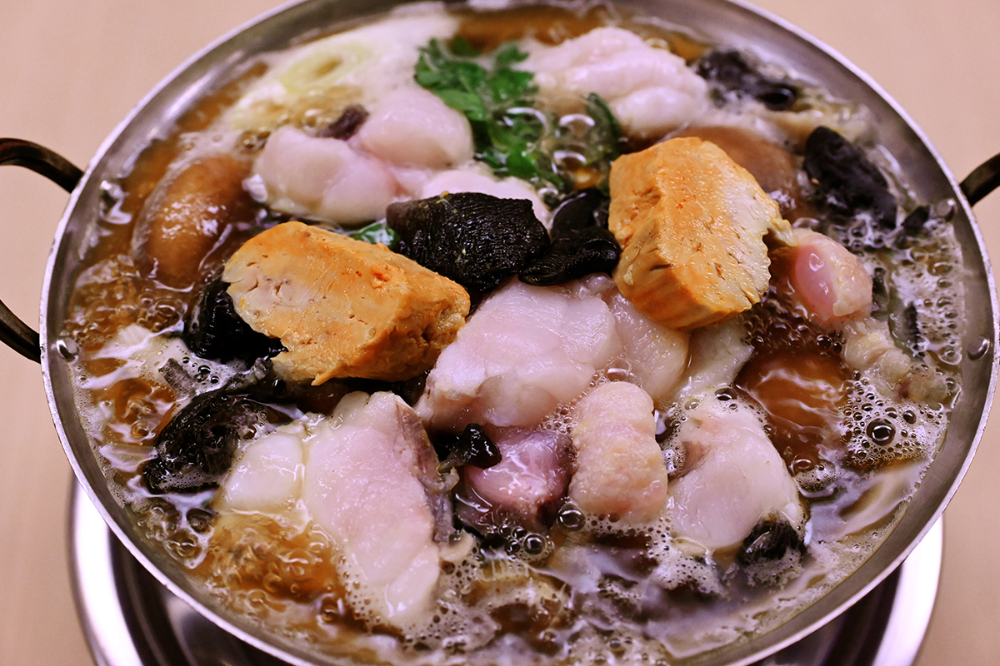
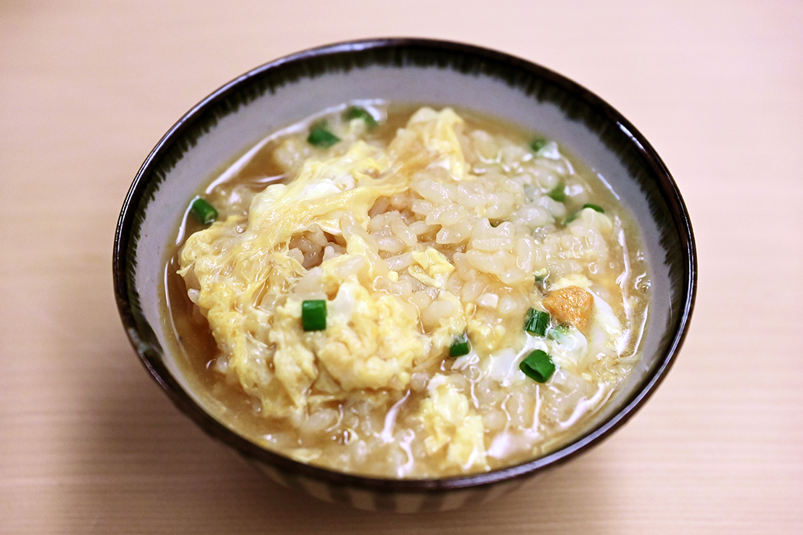
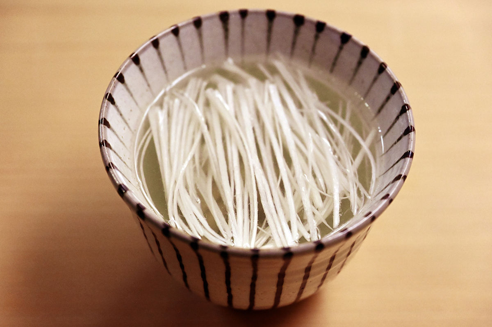

Токио · Гиндза · еда
«Хатимаки Окада»: кухня старого Эдо в Гиндзе с 1916 года

Сакэ во все времена разгоняло мирские заботы, и пить его в Токио хочется со вкусом, как пили в старом Эдо. В Гиндзе для этого есть маленький ресторан, где больше ста лет готовят так, как готовил основатель.
История
Повязка, ставшая вывеской
Ресторан открылся в 1916 году там, где сегодня пятый квартал Гиндзы. Основатель родился в Фукагаве, старом районе на восточном берегу реки Сумида, в семье корабельного плотника, служил приказчиком в продуктовой лавке, а потом ушёл в повара. На кухне он всегда повязывал голову полотенцем, чтобы волосы не падали в еду. Такую повязку по-японски называют «хатимаки», и это слово так и прижилось в названии.
Кухня Эдо была едой ремесленников, которые строили город и ели её после тяжёлой работы. Поэтому здесь любили крепкий, насыщенный вкус блюд Окады. После Великого землетрясения Канто 1923 года ресторан одним из первых поднялся снова, а после войны хозяин построил на пепелище времянку и кормил в ней гостей. Это место очень любили токийские писатели, политики и крупные дельцы.
Гости
Писатели и креветки
«Его обожали Кэнъити Ёсида и Хитоми Ямагути. Это одно из немногих мест в Токио, где сохранился вкус Эдо»
гастрономический журналист
Кэнъити Ёсида (1912–1977) был писателем и литературным критиком, автором книг о еде и выпивке. Хитоми Ямагути (1926–1995) писал романы и эссе и много лет вёл в журнале колонку о жизни горожанина.
Ханако Усуи, повар японской кухни, которая изучает старую кухню Эдо, в «Окаде» без одного блюда не уходит: это «агэ-синдзё».
«Сырые креветки сиба рубят, делают углубление в середине и жарят. Потом смешивают пополам вустерский соус и соевый, кладут горчицу. И в этом весь шик»
Ханако Усуи

Кухня
Вкус основателя
Нынешний хозяин старается не менять вкус, который оставил основатель, и готовит старые блюда. Он учился в одном из ресторанов-рётэев Симбаси, а на здешнюю кухню пришёл около 1987 года, за 36 лет до 2023-го. Вкус «Окады» он перенимал, глядя на работу отца, второго хозяина. С тех пор здесь подают простые, основательные блюда без внешнего блеска.


Сакэ здесь одно: бочковое «Кикумасамунэ». На вопрос о причине хозяин отвечает без раздумий: так было при основателе.

Зима
Анко-набэ и набэ с петухом
Хитоми Ямагути говорил, что зима для него не наступает, пока он не поест здешнего «анко-набэ». Этот котелок с морским чёртом готовят со времён основателя, и зимой это главное блюдо ресторана. Обычно анко-набэ варят на мисо, а здесь бульон соевый, строгий, в духе Эдо.


К 2023 году здесь стали подавать после окончания сезона анко-набэ «сямо-набэ» с мясом петуха породы «Токио-сямо». Блюдо новое, но это уже без сомнения вкус «Окады».

«В нём есть твёрдое достоинство. И при этом никакого чванства. Вот почему я сюда хожу»
гастрономический журналист
«Хатимаки Окада»
- Адрес
- Токио, район Тюо, Гиндза, 3-7-21
- Телефон
- +81 3-3561-0357
- Часы работы
- 17:00–21:00
- Выходные
- воскресенье, праздники
Фото: Кэндзи Итано.